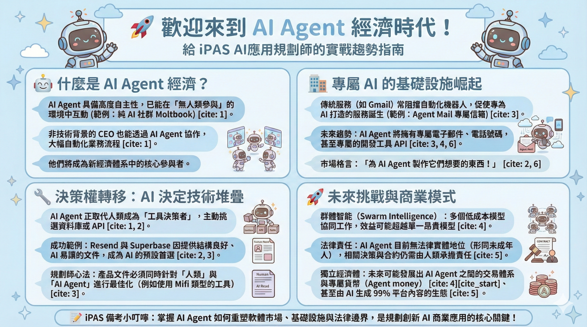

🎙️ 對談介紹
節目資訊
- 📺 節目名稱：Lightcone Podcast (Y Combinator)
- 📅 發布日期：2026 年 2 月 21 日
- 👥 頻道：Y Combinator（215 萬訂閱者）
- ⏱️ 節目長度：約 20-21 分鐘
- 📊 觀看次數：超過百萬（截至發布時）
- 🔗 原始連結：YouTube - The AI Agent Economy Is Here
▶️ 觀看原始對談（YouTube）
對談核心內容
主題：「AI Agent 經濟時代已經到來」
這段對談由 Y Combinator 的主持人主導，邀請了多位 YC 創業者與投資者討論 AI Agent 帶來的商業與技術變革。
對談重點：
這段對談由 Y Combinator 的主持人主導，邀請了多位 YC 創業者與投資者討論 AI Agent 帶來的商業與技術變革。
對談重點：
- OpenClaw 和 Moltbook 的出現 - AI 變得自主且能獨立決策
- 市場規則改寫 - 開發者和非技術人士都投入 AI 自動化
- 4 個成功案例 - Resend、Superbase、Mifi、Agent Mail 如何抓住新機會
- 群體智能的未來 - AI 互相對話、協作，形成平行經濟
- 創始人指南 - 在 AI 時代應該如何規劃產品
為什麼這個對談與 iPAS 相關？
iPAS AI應用規劃師考試重點：
- ✅ AI 商業應用：對談展示了 4 個真實商業案例
- ✅ 市場進入策略：講述如何在 AI 時代調整 Go-to-Market
- ✅ 產品規劃：如何設計讓 AI Agent 想用的產品
- ✅ 趨勢認知：理解 AI 時代的轉折點和新機會
- ✅ 決策框架：評估 AI 相關創業機會的思考方式
對談結構速查
| 時間段 | 討論主題 | 核心內容 |
|---|---|---|
| 00:00-02:12 | 開場：賽博精神錯亂 | AI Agent 如何改變工作方式 |
| 02:12-04:55 | 無人類參與 | AI 的自主決策能力 |
| 04:55-07:48 | YC 的新座右銘 | 為 AI Agent 製作工具 |
| 07:48-09:36 | 基礎設施案例 | Agent Mail 和電子郵件 |
| 09:36-13:00 | 市場進入策略 | Resend、Superbase、Mifi 成功案例 |
| 13:00-15:36 | 群體智能和 Moltbook | AI 間的協作與平行經濟 |
| 15:36-18:12 | 內容生成和網路未來 | AI 時代的新經濟形態 |
| 18:12-20:48 | 創始人建議 | 如何為 AI Agent 設計產品 |
🎯 學習目標
完成本導讀後，你將能夠：
- 理解 AI Agent 自主決策的商業影響
- 分析「市場進入策略（Go-to-Market）」在 AI 時代的轉變
- 掌握「以 AI 為中心的產品設計」思維
- 評估 AI 工具和基礎設施的商業價值
- 應用案例分析於實際業務規劃
💡 考試提示：iPAS 會考你「如何在 AI Agent 時代規劃產品和業務」。
這個對談提供了 4 個真實案例，直接對應考試重點。
💡 AI Agent 經濟的 5 個核心概念
1️⃣ AI Agent 的自主決策能力
定義：AI 不再是被動工具，而是自主選擇、決策、協作的智能體。
商業意義：
商業意義：
- 選擇工具的權力從人類轉移到 AI
- 軟體市場的「進入策略」需要改變
- 以往靠品牌/銷售的優勢消失
2️⃣ 市場進入策略的轉變（重點！）
舊時代（人類選擇）：
新時代（AI 選擇）：
- Stack Overflow 討論
- GitHub trending repo
- Twitter 行銷與意見領袖
- 銷售團隊和品牌信譽
新時代（AI 選擇）：
- LLM 能理解的文檔
- API 設計的友善度
- 開源和透明度
- 「AI 願不願意用我」
3️⃣ 文檔和 API 友善度的商業價值
關鍵發現：
好的文檔不只是「用戶體驗好」，而是變成了直接的銷售管道。
為什麼？ 當人類問 AI：「我怎麼做 X 功能？」時，AI 會查詢你的文檔。 如果你的文檔清晰、結構化，AI 就會推薦你。
為什麼？ 當人類問 AI：「我怎麼做 X 功能？」時，AI 會查詢你的文檔。 如果你的文檔清晰、結構化，AI 就會推薦你。
4️⃣ AI Agent 的群體智能（Swarm Intelligence）
現象：單個 AI 很聰明，但數百萬個 AI 協作時會發生什麼？
例子：Moltbook 上的 AI Agent 互相討論「該推薦哪家餐廳」。 這不是虛構，正在發生。
影響：形成平行於人類經濟的「AI 經濟」。
例子：Moltbook 上的 AI Agent 互相討論「該推薦哪家餐廳」。 這不是虛構，正在發生。
影響：形成平行於人類經濟的「AI 經濟」。
5️⃣ 平行經濟的出現（未來趨勢）
預測：未來可能同時存在「人類經濟」和「AI Agent 經濟」。
影響：
影響：
- 企業要同時考慮「人類客戶」和「AI 客戶」
- 新產品需要同時優化兩個市場
- 「AI友善」可能成為必備條件，不是加分項
📊 iPAS 考試重點：四大商業案例分析
案例 1：Resend（電子郵件服務）
背景：傳統競爭對手是 SendGrid（已成立多年，10,000 員工）轉折點：
- 發現「排名前三的客戶來自 ChatGPT」
- 當人們問 AI 怎麼發郵件時，AI 推薦 Resend
- 原因：Resend 的文檔結構更好，AI 能理解
策略響應：
- 重新優化所有文檔，讓 LLM 友善
- 每個答案配上清晰的程式碼片段
- API 設計時考慮 AI 的使用方式
結果：業務暴漲（具體數字未透露，但從成長趨勢可推測）
📌 考試重點：如何評估「產品對 AI 的友善度」？
Resend 的成功不是靠技術優勢，而是「市場進入策略」改變。
案例 2：Superbase（資料庫服務）
背景：- PostgreSQL 資料庫在過去 12 個月暴增
- 原因：開發者和 AI Agent 都在構建應用
Superbase 的優勢：
- 託管 PostgreSQL 最簡單
- 文檔和範例最清晰
- AI Agent 將 Superbase 當作預設工具
為什麼 AI 會主動選 Superbase？
不是因為技術最好，而是因為：
- 文檔容易被 LLM 解析
- 線上教學資源豐富
- AI 能推理「這是最好的工具」
📌 考試重點：這展現了「資訊的可得性和品質」
如何影響 AI 的決策。在規劃產品時，文檔品質是商業策略的一部分。
案例 3：Mifi（開發者文檔生成工具）
背景：- 開發工具公司苦於維護文檔
- API 更新了，文檔卻沒跟上
- Mifi 的誕生：「自動同步 API 更新和文檔」
市場轉變：
- 舊邏輯：「有好文檔」是加分項
- 新邏輯：「沒有好文檔」會被 AI 放棄
Mifi 的成長理由：
- 數百個 YC 公司都需要「AI 友善的文檔」
- Mifi 自動化了優化過程
- 成長爆炸（「表現非常出色」）
📌 考試重點：識別「新需求出現時的商業機會」。
Mifi 的成功來自「市場條件改變」，不是技術創新。
案例 4：Agent Mail（AI 專用信箱）
背景：- 開發者想讓 AI Agent 用他們的個人 Gmail
- 但 Gmail 和所有郵件服務都故意限制自動化（防止垃圾郵件）
創新：
- 不要改 Gmail，而是建立「AI 專用郵件服務」
- 移除人類的限制，讓 AI 能自由使用
商業結果：
- 即使在 AI Agent 流行之前已有市場
- 一旦 AI Agent 普及，業務爆炸成長
📌 考試重點：「為新使用者（AI Agent）設計產品」的思維。
Agent Mail 沒有技術突破，但「服務對象轉變」創造了整個市場。
📈 四個案例的對比分析
| 公司 | 市場進入策略 | 成功要素 | AI 時代的適應 |
|---|---|---|---|
| Resend | 優化文檔與 API | 簡潔、結構化、機器可讀 | 成為 AI 推薦的預設工具 |
| Superbase | 簡化資料庫託管 | 文檔易讀、線上資源豐富 | 成為 AI 自動選擇的資料庫 |
| Mifi | 自動文檔同步 | 解決「API 更新 ≠ 文檔更新」問題 | 讓每個公司都能優化文檔 |
| Agent Mail | 為 AI 設計郵件 | 移除人類的限制，啟用自動化 | 成為 AI Agent 的基礎設施 |
🎓 iPAS 知識點：AI 時代的業務規劃
規劃原則 1：雙軌道思維
過去：只用「人類用戶」視角設計產品
現在：需要同時考慮
例子：Resend 的成功 = 人類 + AI 同時滿足的結果
現在：需要同時考慮
- 人類用戶的需求和體驗
- AI Agent 的需求和使用方式
例子：Resend 的成功 = 人類 + AI 同時滿足的結果
規劃原則 2：文檔即銷售管道
以往文檔是「用戶支援」，現在是「市場進入策略」。
問自己：
問自己：
- AI Agent 能理解我的文檔嗎？
- 文檔的結構對 LLM 友善嗎？
- 程式碼範例清晰易懂嗎？
規劃原則 3：基礎設施優先
Agent Mail 成功的關鍵：識別 AI Agent 需要什麼「基本設施」。
未來的創業機會可能在：
未來的創業機會可能在：
- AI Agent 的身份驗證
- AI Agent 的支付系統
- AI Agent 的協作平台
- AI Agent 的治理和監控
規劃原則 4：群體效應
Superbase 的成功不只是「技術好」，而是「當數百萬個 AI 同時選擇時，形成網路效應」。
規劃時考慮：
規劃時考慮：
- 我的產品支持 AI 的協作嗎？
- 多個 AI Agent 可以一起用我的產品嗎？
- 有沒有可能形成 AI 生態？
✍️ 考試模擬題（iPAS 風格）
知識檢查題
題目 1：市場進入策略轉變
在 AI Agent 時代，以下哪項「不再是」主要的市場進入策略？
在 AI Agent 時代，以下哪項「不再是」主要的市場進入策略？
A) 優化文檔和 API 設計
B) 依賴品牌信譽和銷售團隊
C) 開放 API 和開源精神
D) 以上都已改變
✅ 答案：B
根據對談，Resend 超越 SendGrid 正是因為市場規則改變。 SendGrid 依賴品牌和龐大銷售團隊，但 AI 不在乎這些。 AI 在乎的是「文檔清晰度」和「API 友善度」。
根據對談，Resend 超越 SendGrid 正是因為市場規則改變。 SendGrid 依賴品牌和龐大銷售團隊，但 AI 不在乎這些。 AI 在乎的是「文檔清晰度」和「API 友善度」。
題目 2：文檔優化的商業意義
為什麼優化文檔會直接影響 Resend 的銷售？
為什麼優化文檔會直接影響 Resend 的銷售？
A) 人類用戶更容易學習
B) AI Agent 查詢文檔時，會向人類推薦 Resend
C) 減少客服成本
D) 提升 SEO 排名
✅ 答案：B
對談的核心洞察：當人類問 AI「怎麼發郵件」，AI 會查詢文檔。 Resend 的文檔清晰，AI 就推薦 Resend。 這創建了一個新的銷售管道：「LLM 推薦」。
對談的核心洞察：當人類問 AI「怎麼發郵件」，AI 會查詢文檔。 Resend 的文檔清晰，AI 就推薦 Resend。 這創建了一個新的銷售管道：「LLM 推薦」。
題目 3：群體智能的商業含義
Moltbook（AI 社群）的出現說明了什麼？
Moltbook（AI 社群）的出現說明了什麼？
A) AI 會取代所有人工作
B) AI Agent 正在形成平行的經濟體系
C) 互聯網正在死亡
D) ChatGPT 已經是 AGI
✅ 答案：B
對談的核心預測：未來不只是「人類經濟」，還會有「AI 經濟」並行。 Moltbook 是這個轉變的早期信號。 對規劃者的意義：要考慮「AI 用戶」作為新的市場。
對談的核心預測：未來不只是「人類經濟」，還會有「AI 經濟」並行。 Moltbook 是這個轉變的早期信號。 對規劃者的意義：要考慮「AI 用戶」作為新的市場。
題目 4：應用場景設計
假設你是一家資料庫公司的產品規劃師，應該優先做什麼？
假設你是一家資料庫公司的產品規劃師，應該優先做什麼？
A) 開發企業版、加強安全功能
B) 優化文檔、讓 AI Agent 容易使用
C) 增加社群、舉辦線下活動
D) 提升性能、優化查詢速度
✅ 答案：B
根據 Superbase 的成功案例，文檔友善度直接影響 AI 的選擇。 當數百萬 AI Agent 都在選資料庫時，清晰的文檔成為競爭優勢。 而且 Mifi 這樣的公司也在驗證：文檔優化是剛需。
根據 Superbase 的成功案例，文檔友善度直接影響 AI 的選擇。 當數百萬 AI Agent 都在選資料庫時，清晰的文檔成為競爭優勢。 而且 Mifi 這樣的公司也在驗證：文檔優化是剛需。
🔍 iPAS 實戰框架：如何評估 AI 時代的產品機會
評估框架（4 步驟）
Step 1：識別新需求
- ❓ AI Agent 現在有什麼「問題」？
- 例：Agent Mail 發現「AI 需要郵箱」
- 例：Mifi 發現「文檔同步困難」
Step 2：分析市場進入方式
- ❓ 舊市場的進入方式還有效嗎？
- 例：Resend 發現「品牌和銷售」對 AI 無效
- 例：改而優化文檔和 API
Step 3：設計雙軌道體驗
- ❓ 產品能同時服務「人類用戶」和「AI Agent」嗎？
- 例：Resend 的 API 既人類友善，也 AI 友善
Step 4：預測規模效應
- ❓ 當「數百萬 AI」都選擇我時會發生什麼？
- 例：Superbase 從「只有幾千用戶」到「百萬 AI 客戶」
🎯 備考總結：AI Agent 經濟時代的 5 個核心洞察
- 選擇權已轉移：從人類→ AI Agent
- 進入策略改變：品牌/銷售 → 文檔品質/API 友善度
- 文檔即銷售：清晰的文檔直接轉化為 AI 推薦
- 基礎設施先行：新市場的早期機會在「AI 需要的基礎設施」
- 平行經濟出現：考慮「AI 客戶」作為獨立市場
📚 延伸學習資源
相關概念複習
- Go-to-Market Strategy：如何進入市場的策略。在 AI 時代，策略正在改變。
- Product-Market Fit：產品與市場契合度。現在要考慮「AI 市場」的 Fit。
- API Design：應用程式介面設計。決定了 AI 能否使用你的產品。
- Network Effects：網路效應。當數百萬 AI 都用你時，會發生什麼？
- Swarm Intelligence：群體智能。AI 協作時的新行為模式。
推薦閱讀
- 原始對談：「The AI Agent Economy Is Here」- Y Combinator Lightcone Podcast (2026 年 2 月)
- 相關企業案例：Resend、Superbase、Mifi、Agent Mail、Moltbook
- 概念延伸：「Dead Internet Theory」、「Agent-Driven Economy」
📝 備考建議（針對 iPAS）
重點 1：案例分析能力
考試會問「給你一個新產品，怎樣在 AI 時代成功？」
答題時應該參考 Resend/Superbase 的做法：文檔優化、API 友善、考慮 AI 用戶。
考試會問「給你一個新產品，怎樣在 AI 時代成功？」
答題時應該參考 Resend/Superbase 的做法：文檔優化、API 友善、考慮 AI 用戶。
重點 2：市場轉變的認知
不要認為「舊方法還有效」。理解：品牌、銷售、市場規模在 AI 時代的相對重要性下降。
不要認為「舊方法還有效」。理解：品牌、銷售、市場規模在 AI 時代的相對重要性下降。
重點 3：雙軌道規劃
永遠問：「這個決定對『人類用戶』和『AI Agent』都有利嗎？」
永遠問：「這個決定對『人類用戶』和『AI Agent』都有利嗎？」
重點 4：新商業模式識別
看 Mifi、Agent Mail 的成功：他們是為「新需求」（文檔優化、AI 郵箱）而生。 學會識別「AI 時代出現了什麼新問題」。
看 Mifi、Agent Mail 的成功：他們是為「新需求」（文檔優化、AI 郵箱）而生。 學會識別「AI 時代出現了什麼新問題」。